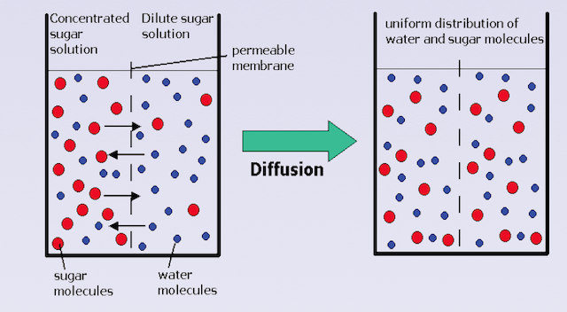
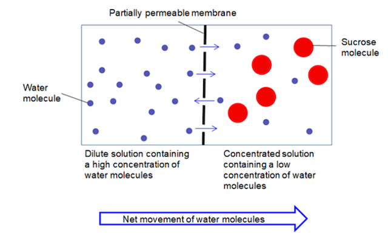
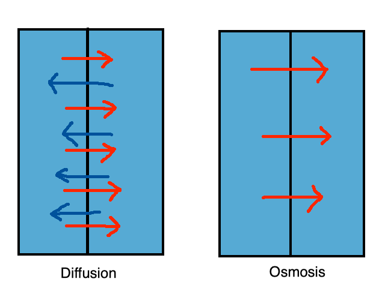
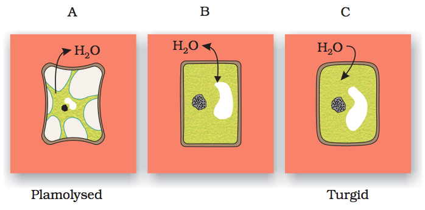
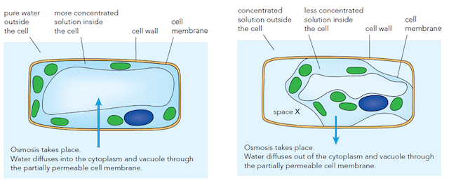

Chapter 15 (Part I)
Osmosis and diffusion
Table of Contents
Diffusion
Definition: the net movement of atoms or molecules
from a region of higher concentration to a region of a lower concentration
Examples:
- Diffusion of gases — perfume
- Diffusion of liquids — potassium manganate (VII) solution
- Diffusion through a fully permeable membrane → allows all molecules to pass through
- Diffusion through a partially permeable membrane → allows some molecules to pass through

Membranes
-
Partially Permeable Membrane (P.P.M.)
- Examples:
- visking tubing
- dialysis tubing
- cell membrane
- allows some but not all substances to pass through
- Substances that can pass through:
- water molecules
- glucose molecules
- oxygen molecules
- carbon dioxide molecules
- Substances that cannot pass through:
- starch molecules
- sucrose molecules
- complex sugar molecues
-
Fully Permeable Membrane (F.P.M.)
Visking tubing, iodine and starch
Observation: starch solution in visking tubing turns
blue-black
Explanation:
- Visking tubing is partially permeable
- Iodine molecuels → small enough to diffuse through visking tubing.
- Starch molecules → too large to pass through visking tubing.
- Iodine molecues will enter the visking tubing and react with the starch molecules
- Forms a blue-black colour.
Osmosis
Definition: the net movement of water molecues
from a region of lower water potential to a region of higher water potential through a
partially-permeable membrane

Water potential
Definition: the tendency for water molecues to move from one place to another
- Dilute solution (more water molecules) = higher water potential
- Water molecules always move from a place with a higher water potential to a place with a lower water potential
- Osmosis is the net movement of water molecues
| Molecule |
Arm 1 |
Arm 2 |
| Sucrose |
10 |
5 |
| Water |
90 |
95 |
| W. P. |
Lower |
Higher |
Example

- area with more water % have a higher water potential
- sucrose molecules are too large to pass through P.P.M.
- Net movement of water molecules from (higher w.p.) to (lower w.p.)
Diffusion in cells
Amoeba
Diffusion in plant cells
- Photosynthesis:
- Carbon dioxide diffuses into cells
- Oxygen diffuses out of cells
Osmosis in plant cells
- Cellulose cell wall → fully permeble membrane
- Cell surface membrane → partially permeable membrane

Turgid
→ in higher water potential
- Water enters the cell
- Cell swells but cell wall cannot break as is too strong
- Pressure exerted on cell wall; turgor pressure
Plasmolysis
→ in lower water potential

- Water leaves the cell
- Vacuole loses water and shrinks
- Plasmolysed cells are limp, can collapse and will die
→ Why should we not add too much fertiliser?
Answer: Water molecules leave the vacuole through osmosis, causing the cell to be plasmolysed.
Osmosis in animal cells
- Animal cells do not have cell wall
Hæmolysis
→ higher water potential (just water)
- Water enters the RBC
- RBC swells up
- RBC implodes (bursts) -- haemolysis
Crenation
→ lower water potential
- Water molecues leave
- Cell shrinks and crinkles
- Cell dies later